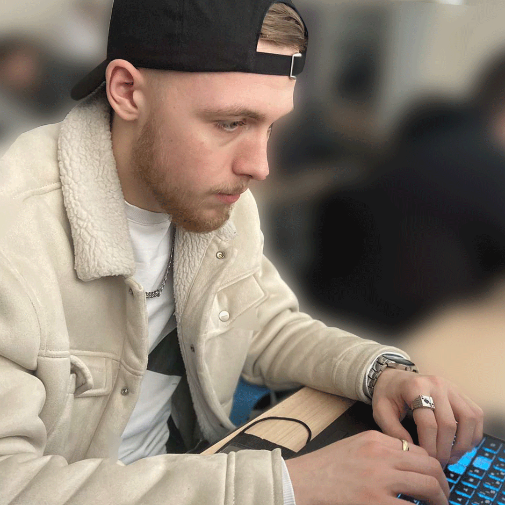
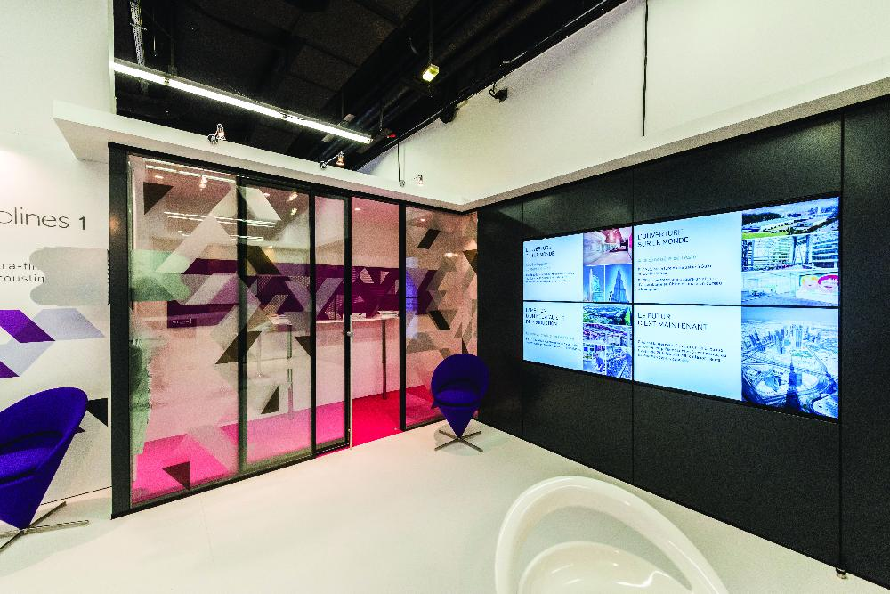
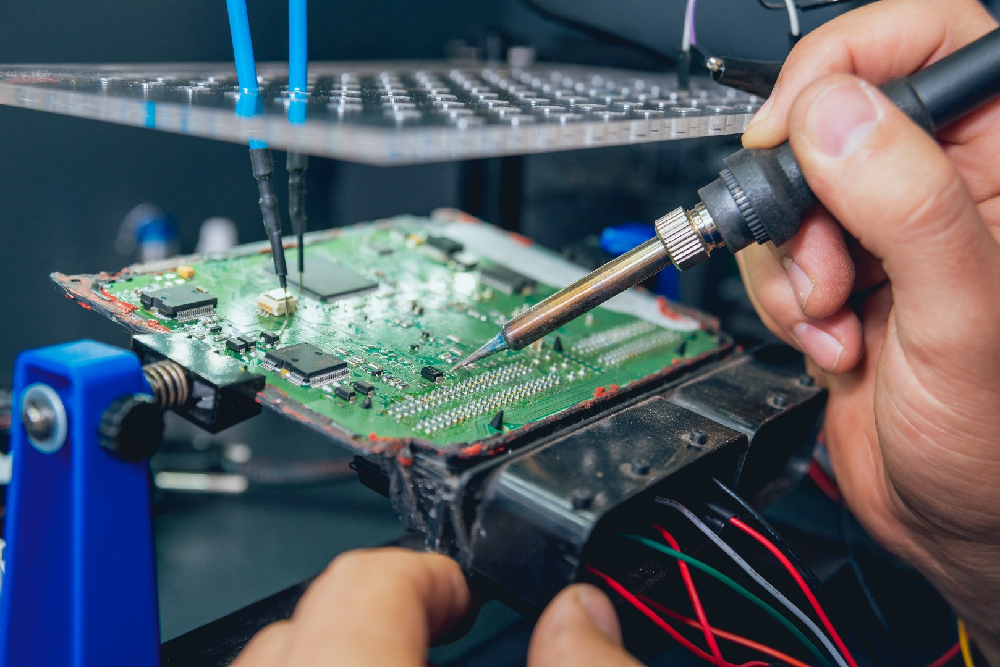
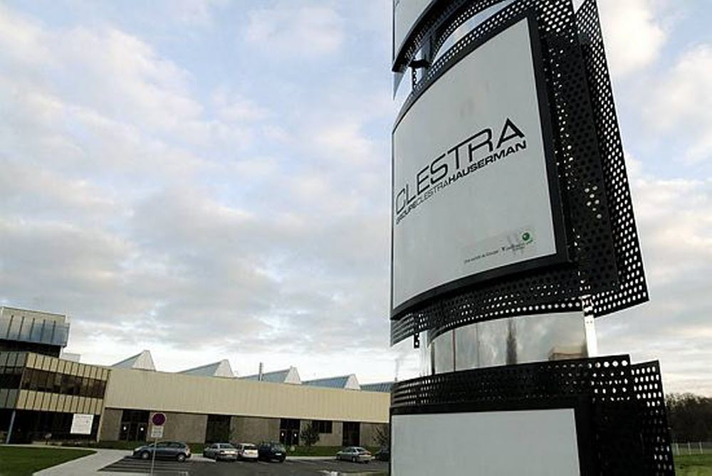
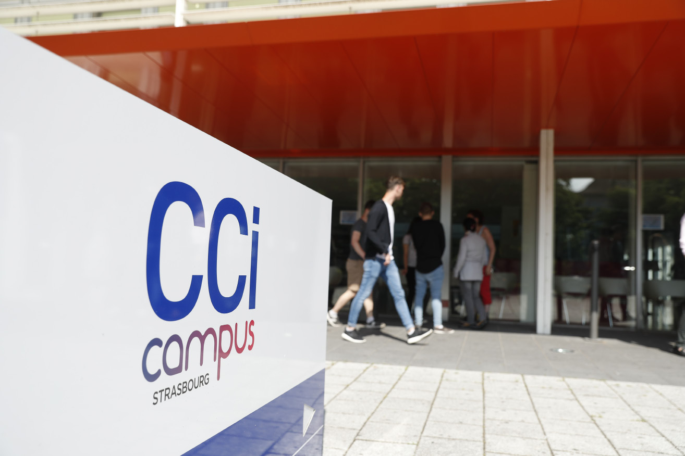

Bonjour, je suis apprenti en BTS SIO et technicien de maintenance en informatique.


Mon parcours
Mon parcours scolaire
De 2018 à 2021, au lycée Guteberg à Illkirch, j'ai préparé un Baccalauréat systèmes
numériques que j'ai obtenu avec une moyenne de 14.61 et une mention "Bien".
Lors de ces 3 années, j'ai eu le choix entre l'option réseau infrastructure et services communicants (RISC), et l'option audiovisuel réseau et équipement domestiques
(ARED). Personellement je me suis penché sur l'option ARED, car selon moi je pense que je suis plus apte à pratiquer des activitées manuelles.
J'ai acquis plusieurs compétances comme le fais de détécter une panne sur un appareil électronique mais également remédier à cette panne et faire fonctionner l'appareil comme à l'origine.
Durant ces 3 années de Bac Pro j'ai pu également effctuer plusieurs périodes de stage en pilieu professionnel, notament dans le domaine de l'informatique, ou j'ai pu acquerir beaucoup de compétances dans le montage et le dépannage d'ordinateurs.
j'ai également acquéri des compétances dans le dépannage d'électroménager et électro-doméstique.

Milieu professionnel
Mon entreprise
J'occupe actuellement un poste d'apprentit en tant que technicien de maintenance en informatique au sein de l'entreprise Clestra HAUSERMAN.
Clestra est une entreprise qui imagine et fabrique des cloisons amovibles principalement pour les bureaux.
L'entreprise comprend environ 250 emplyés, ce qui necéssite une maintenance et une administration informatique éfficace.

Milieu scolaire
Mon école
J'occupe actuellement un poste d'apprentit en tant que technicien de maintenance en informatique au sein de l'entreprise Clestra HAUSERMAN.
Clestra est une entreprise qui imagine et fabrique des cloisons amovibles principalement pour les bureaux.
L'entreprise comprend environ 250 emplyés, ce qui necéssite une maintenance et une administration informatiqu éfficace.

Mes adresses
bryan670006@gmail.com
b.blanche@clestra.com
sefir670006@gmail.com